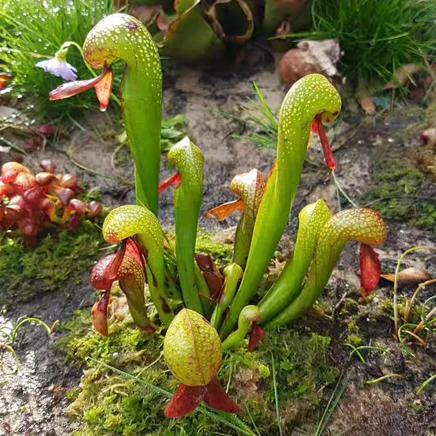
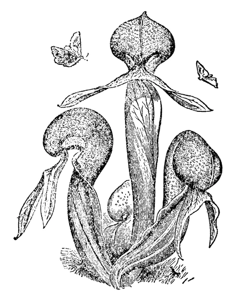
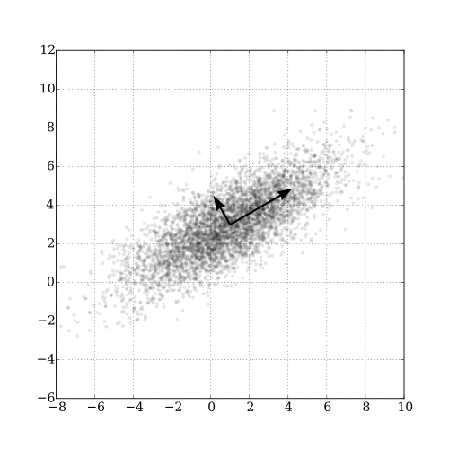
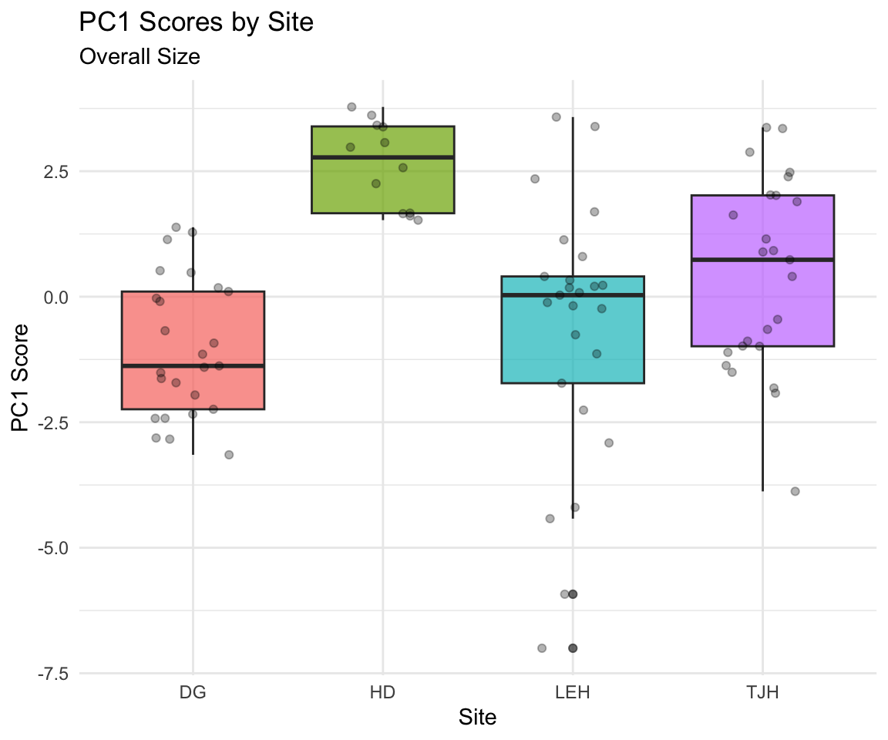
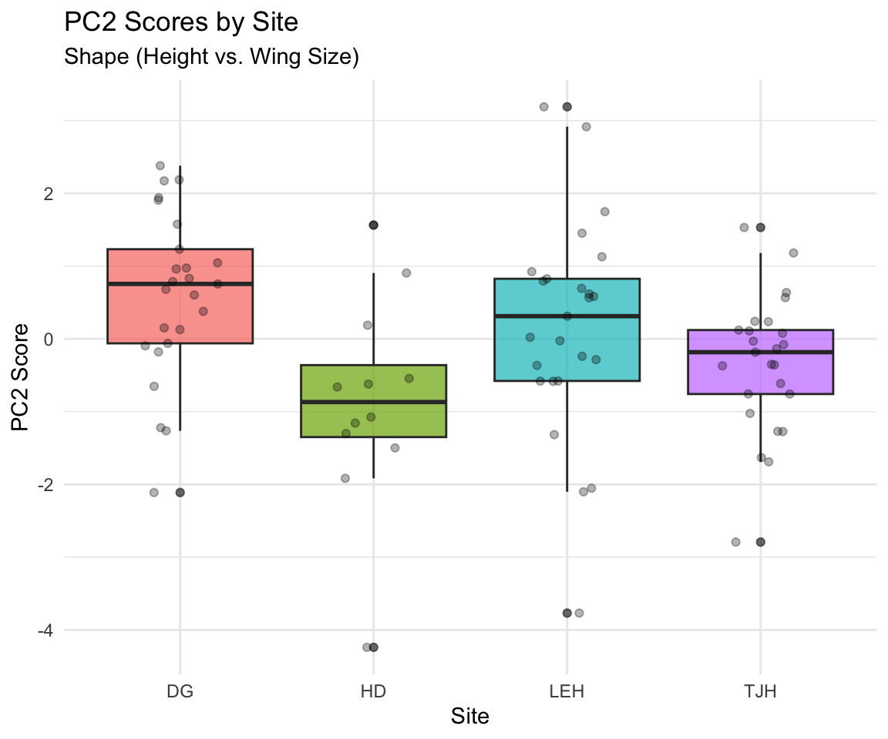
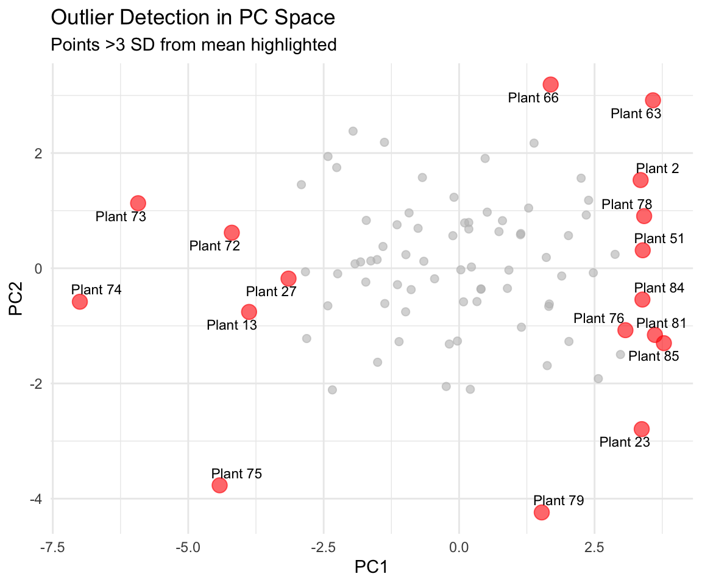
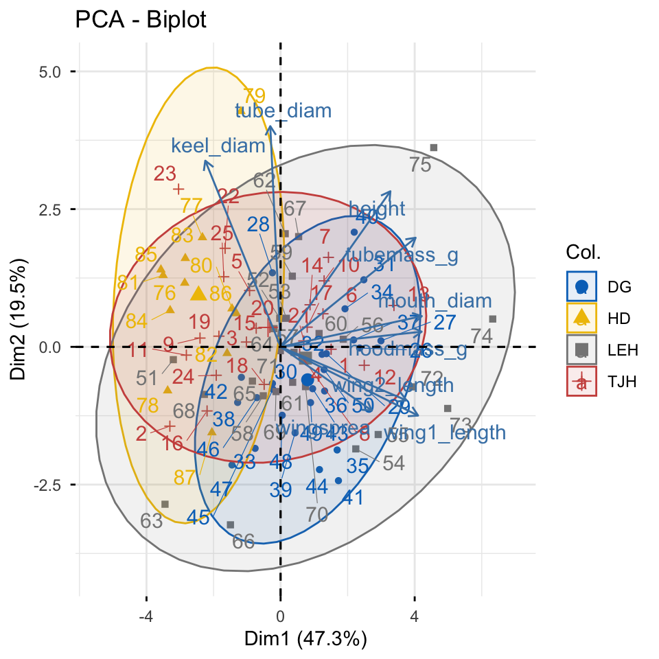
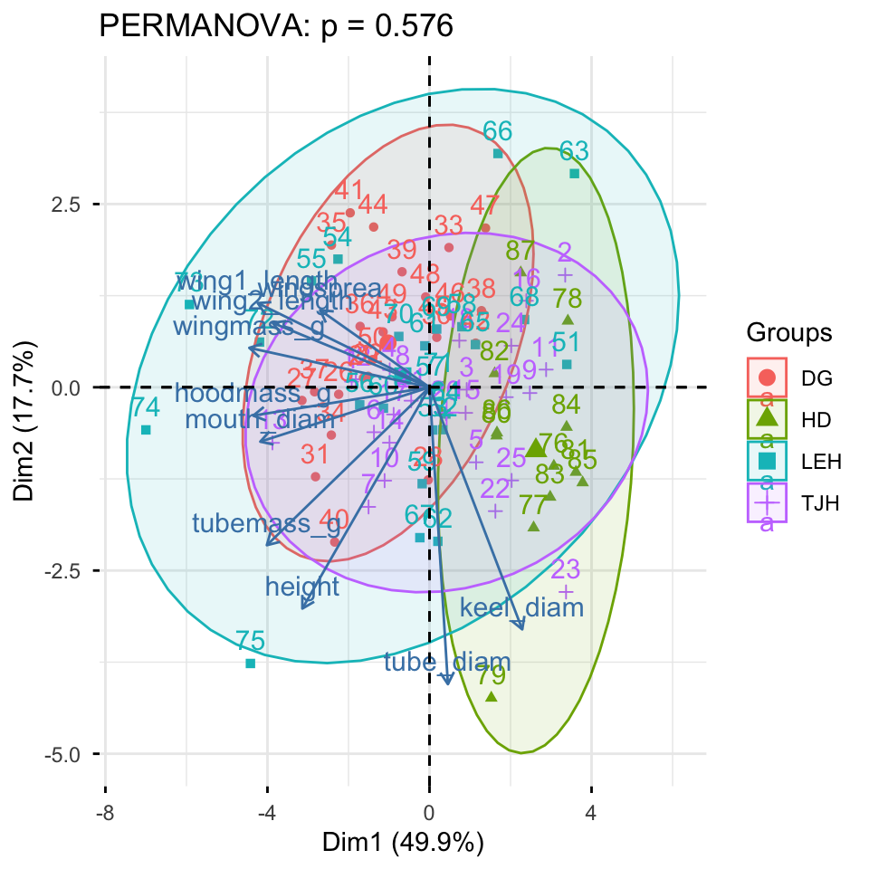

# Load the data
darlingtonia <- read_csv("darlingtonia.csv")
# View the structure
head(darlingtonia)
## # A tibble: 6 × 11
## site height mouth_diam tube_diam keel_diam wing1_length wing2_length
## <chr> <dbl> <dbl> <dbl> <dbl> <dbl> <dbl>
## 1 TJH 654 38.4 16.6 6.4 85 76
## 2 TJH 413 22.2 17.2 5.9 55 26
## 3 TJH 610 31.2 19.9 6.7 62 60
## 4 TJH 546 34.4 20.8 6.3 84 79
## 5 TJH 665 30.5 20.4 6.6 60 51
## 6 TJH 665 33.6 19.5 6.6 84 66
## # ℹ 4 more variables: wingsprea <dbl>, hoodmass_g <dbl>, tubemass_g <dbl>,
## # wingmass_g <dbl>
darlingtonia %>%
count(site, name = "n_plants")
## # A tibble: 4 × 2
## site n_plants
## <chr> <int>
## 1 DG 25
## 2 HD 12
## 3 LEH 25
## 4 TJH 25Principal Component Analysis (PCA)
Understanding Multivariate Data with Darlingtonia californica
Introduction to Multivariate Analysis
Why Study Multivariate Data?
- In ecology, often measure many variables on the same organisms:
- Plant morphology: height, width, leaf size, flower size
- Environmental conditions: temperature, pH, nutrients
- Species composition: presence/absence, abundance
- Challenge: How do we make sense of all these variables at once?
- PCA helps by:
- Reducing many correlated variables to a few key dimensions
- Visualizing patterns in high-dimensional data
- Identifying the most important sources of variation
Darlingtonia californica (Cobra Lily)

Our Study System: Darlingtonia
The Cobra Lily Dataset
- Analyze morphological measurements from 89 individual Darlingtonia californica plants collected from 4 sites in the Siskiyou Mountains of Oregon.
- Variables measured (10 total):
- Morphological measurements (mm):
- height - Height of pitcher
- mouth_diam - Mouth diameter
- tube_diam - Tube diameter
- keel_diam - Keel diameter
- wing1_length, wing2_length
- Wing lengths (2 measurements)
- wingsprea - Wing spread
- Biomass measurements (g):
hoodmass_g - Hood mass
tubemass_g - Tube mass
wingmass_g - Wing mass
- Morphological measurements (mm):
![Darlingtonia pitcher structure showing measured features\]
- **Sites**:
- TJH: T.J. Howell’s Fen
- DG: Day’s Gulch
- LEH: L.E. Hunter’s Fen
- HD: High Divide
Loading the Data
Step 1: Import and Prepare the Data
Exploring the Raw Data
Initial Data Exploration
Before any analysis, we should always look at our data:
- Check for outliers
- Examine distributions
- Look for patterns by site
- Understand variable scales
Key observations:
- Variables measured in different units (mm vs. g)
- Different ranges: height (hundreds) vs. biomass (fractions)
- Need to standardize before PCA!

The Problem of Different Scales
Why Standardization Matters
- Without standardization:
- Variables with larger values (like height in mm) would dominate the analysis over variables with smaller values (like biomass in g).
- Example from data:
- Height: mean ≈ 600 mm, range 322-845 mm -
- Wing mass: mean ≈ 0.16 g, range 0.02-5.00 g
- calculated distances without standardizing, height would have 1000× more influence than wing mass!
- Solution: Z-score standardization
- \(Z = \frac{(Y_i - \bar{Y})}{s}\)
- transforms each variable to:
- Mean = 0
- Standard deviation = 1
- Units: “standard deviations from the mean”
- Before standardization: - Height dominates (larger scale)
- After standardization:
- All variables contribute equally
- Measured in “standard deviations”
# Example: standardize height
darlingtonia %>%
summarize(
mean_height = mean(height),
sd_height = sd(height),
mean_wingmass = mean(wingmass_g),
sd_wingmass = sd(wingmass_g)
)
## # A tibble: 1 × 4
## mean_height sd_height mean_wingmass sd_wingmass
## <dbl> <dbl> <dbl> <dbl>
## 1 616. 101. 0.154 0.102
# After standardization, both will have:
# mean = 0, sd = 1Measuring Multivariate Distance
Euclidean Distance Between Individuals
- How different are two plants?
- For two plants measured on multiple variables, calculate Euclidean distance:
For 2 variables (height and spread):
- \(d_{i,j} = \sqrt{(y_{i,1} - y_{j,1})^2 + (y_{i,2} - y_{j,2})^2}\)
For n variables:
- \(d_{i,j} = \sqrt{\sum_{k=1}^{n}(y_{i,k} - y_{j,k})^2}\)
Pythagorean theorem extended to many dimensions!
Key point: Distance should use standardized values so all variables contribute equally
- For two plants measured on multiple variables, calculate Euclidean distance:
##
## Distance between plants 1 and 2 (standardized):
## 3.53 standard deviations
##
##
## Note: Standardization uses mean and SD from ALL plants,
## not just these two plants!Standardizing the Data
Step 2: Z-score Transformation

Visualizing Standardized Data

Understanding Correlations
Why Correlations Matter for PCA
- PCA works best when variables are correlated:
- If variables are uncorrelated → PCA provides no benefit
- If variables are highly correlated → PCA can reduce dimensions effectively
- In data, expect correlations because:
- Larger plants have larger measurements overall
- Wing dimensions likely correlate with each other
- Mass measurements correlate with size measurements
- The correlation matrix shows relationships between all pairs of variables.
- Strong correlations (positive or negative) suggest PCA will be useful!
Strong positive correlations (dark blue) suggest variables measure similar aspects of plant size/shape.

Correlation Matrix Details
Examining Variable Relationships
## height mouth_diam tube_diam keel_diam wing1_length wing2_length
## height 1.00 0.61 0.24 -0.06 0.28 0.29
## mouth_diam 0.61 1.00 -0.05 -0.39 0.57 0.44
## tube_diam 0.24 -0.05 1.00 0.65 -0.09 0.01
## keel_diam -0.06 -0.39 0.65 1.00 -0.35 -0.24
## wing1_length 0.28 0.57 -0.09 -0.35 1.00 0.84
## wing2_length 0.29 0.44 0.01 -0.24 0.84 1.00
## wingsprea 0.12 0.25 0.10 -0.19 0.64 0.71
## hoodmass_g 0.49 0.76 -0.11 -0.34 0.61 0.49
## tubemass_g 0.84 0.72 0.10 -0.24 0.44 0.36
## wingmass_g 0.40 0.62 -0.16 -0.36 0.76 0.69
## wingsprea hoodmass_g tubemass_g wingmass_g
## height 0.12 0.49 0.84 0.40
## mouth_diam 0.25 0.76 0.72 0.62
## tube_diam 0.10 -0.11 0.10 -0.16
## keel_diam -0.19 -0.34 -0.24 -0.36
## wing1_length 0.64 0.61 0.44 0.76
## wing2_length 0.71 0.49 0.36 0.69
## wingsprea 1.00 0.25 0.16 0.39
## hoodmass_g 0.25 1.00 0.76 0.80
## tubemass_g 0.16 0.76 1.00 0.63
## wingmass_g 0.39 0.80 0.63 1.00Key Observations
- Highly correlated variables:
- Height with tube area (r=0.89)
- Wing lengths with each other (r=0.80)
- Wing area with wing spread (r=0.81)
- Height with tube area (r=0.89)
- These correlations indicate redundancy
- multiple variables measuring similar things.
- Moderate correlations:
- Most morphological variables
- Mass measurements with size
- Lower correlations:
- Some specific features like keel diameter
- PCA will help by combining correlated variables into fewer components!
What is Principal Component Analysis?
The Concept of PCA
- PCA creates new variables (components) that are:
- Linear combinations of original variables
- Uncorrelated with each other
- Ordered by importance (amount of variance explained)
- The mathematical idea:
- For each plant i and component k:
- \(Z_{ik} = a_{i1}Y_1 + a_{i2}Y_2 + ... + a_{in}Y_n\)
- Where:
- \(Z_{ik}\) = score on principal component k
- \(Y_j\) = standardized value of original variable j
- \(a_{ij}\) = loading (weight) of variable j on component i
- Goal: Find loadings that maximize variance in first component, then second, etc.

Conceptual diagram of PCA: reducing 2 variables to 1 principal axis
- The first principal axis passes through maximum variance.
- Key properties: - As many components as variables - First components explain most variation - Later components explain residual variation
Principal Components: Properties
Understanding Components are:
- 1. Orthogonal (perpendicular)
- Components are uncorrelated
- Each captures independent information
- 2. Ordered by variance
- PC1 explains the most variance
- PC2 explains second most (of remaining variance)
- And so on…
- 3. Linear combinations
- Each component is a weighted sum of original variables
- Weights (loadings) show variable importance
Why this matters:
- Dimension reduction:
- Start with 10 correlated variables
- End with 2-3 uncorrelated components
- Retain most information with fewer dimensions
- Easier interpretation:
- PC1 might represent “overall size”
- PC2 might represent “shape”
- Components often have biological meaning
- Better for analysis:
- Can use in regression, ANOVA
- No multicollinearity problems
- Variables are standardized
Performing PCA in R
Step 3: Run the Analysis
# Perform PCA using prcomp()
# center = TRUE: center variables (mean = 0)
# scale. = TRUE: scale variables (sd = 1)
pca_result <- prcomp(darl_numeric,
center = TRUE,
scale = TRUE)
# What's in the result?
names(pca_result)
## [1] "sdev" "rotation" "center" "scale" "x"Understanding the Output
## Importance of components:
## PC1 PC2 PC3 PC4 PC5 PC6 PC7
## Standard deviation 2.2332 1.3288 1.2354 0.75701 0.59301 0.51062 0.46177
## Proportion of Variance 0.4987 0.1766 0.1526 0.05731 0.03517 0.02607 0.02132
## Cumulative Proportion 0.4987 0.6753 0.8279 0.88521 0.92038 0.94645 0.96777
## PC8 PC9 PC10
## Standard deviation 0.3768 0.33982 0.25457
## Proportion of Variance 0.0142 0.01155 0.00648
## Cumulative Proportion 0.9820 0.99352 1.00000- Output components:
sdev: standard deviations of each PC (square root of eigenvalues)rotation: loadings matrix (how variables load on PCs)x: PC scores for each observationcenter: variable meansscale: variable standard deviations
Eigenvalues and Variance Explained
How Much Variance Does Each PC Explain?
- Eigenvalues (\(\lambda\)) measure variance explained by each component.
- The proportion of variance for PC j is:
- \(\text{Proportion}_j = \frac{\lambda_j}{\sum_{k=1}^{n}\lambda_k}\)
- In practice:
PC1 always explains the most variance
We want the first few PCs to explain most (>70%) of total variance
allows dimension reduction
## # A tibble: 10 × 4
## PC Eigenvalue Proportion Cumulative
## <chr> <dbl> <dbl> <dbl>
## 1 PC1 4.99 0.499 0.499
## 2 PC2 1.77 0.177 0.675
## 3 PC3 1.53 0.153 0.828
## 4 PC4 0.573 0.057 0.885
## 5 PC5 0.352 0.035 0.92
## 6 PC6 0.261 0.026 0.946
## 7 PC7 0.213 0.021 0.968
## 8 PC8 0.142 0.014 0.982
## 9 PC9 0.115 0.012 0.994
## 10 PC10 0.065 0.006 1Scree Plot: Choosing Components
How Many Components to Use?
- A scree plot shows variance explained by each component.
- How to read it:
- Look for an “elbow” - sharp change in slope
- Keep components before the elbow
- Discard components in the “scree” (rubble)
- In this data:
- PC1 explains 49.9% of variance
- PC2 explains 17.7%
- PC3 explains 15.3%
- First 3 PCs explain 77.3% of variance
- Decision: Use PC1, PC2, and PC3 for interpretation.
- remaining 7 components explain 17.1% (mostly noise).

Understanding Loadings
What are Loadings?
- Loadings are the weights (\(a_{ij}\)) that show how each original variable contributes to each principal component.
- For PC1:
- \(Z_1 = a_{11}Y_1 + a_{12}Y_2 + ... + a_{1p}Y_p\)
- Interpreting loadings:
- Large positive loading: variable increases with PC
- Large negative loading: variable decreases with PC
- Near-zero loading: variable unimportant for PC
- Guidelines:
- Loadings > 0.3 or < -0.3 are worth considering
- Loadings > 0.5 or < -0.5 are important
- Sign (+ or -) can flip; patterns matter more
- PC1 loadings:
- Most variables have similar positive values
- All ~0.31 to 0.40 except keel (-0.18) and tube (-0.002)
- Suggests PC1 measures “overall size”
## PC1 PC2 PC3
## height -0.278 -0.449 0.198
## mouth_diam -0.369 -0.110 0.214
## tube_diam 0.040 -0.602 -0.390
## keel_diam 0.202 -0.491 -0.328
## wing1_length -0.375 0.171 -0.280
## wing2_length -0.342 0.131 -0.415
## wingsprea -0.239 0.156 -0.549
## hoodmass_g -0.385 -0.057 0.185
## tubemass_g -0.355 -0.320 0.263
## wingmass_g -0.393 0.080 -0.007Interpreting PC1: Overall Size
- PC1 Interpretation - Looking at PC1 loadings:
- Key patterns:
- Most variables load positively and similarly: - Height: 0.310 - Mouth diameter: 0.400
- Wing lengths: 0.386, 0.372
- Wing spread: 0.256
- Biomass: 0.397, 0.380, 0.230
- Exception: Keel diameter (-0.177) and tube diameter (~0)
- Biological meaning: PC1 represents overall plant size
- most measurements scale together (bigger plants have bigger everything).
## # A tibble: 10 × 2
## Variable Loading
## <chr> <dbl>
## 1 wingmass_g -0.393
## 2 hoodmass_g -0.385
## 3 wing1_length -0.375
## 4 mouth_diam -0.369
## 5 tubemass_g -0.355
## 6 wing2_length -0.342
## 7 height -0.278
## 8 wingsprea -0.239
## 9 keel_diam 0.202
## 10 tube_diam 0.0402- High PC1 → large plants
- Low PC1 → small plants

Interpreting PC2: Shape Contrast
PC2 Interpretation
- Looking at PC2 loadings:
- Key patterns:
- Height: -0.419 (negative, moderate)
- Mouth: -0.250 (negative, moderate)
- Wing measurements: positive (0.275-0.434)
- Wing spread: 0.434 (positive, strong)
- Biomass: mostly negative
- Biological meaning: PC2 represents shape trade-offs
- tall narrow pitchers vs. short wide pitchers with large wings.
## # A tibble: 10 × 2
## Variable Loading
## <chr> <dbl>
## 1 tube_diam -0.602
## 2 keel_diam -0.491
## 3 height -0.449
## 4 tubemass_g -0.320
## 5 wing1_length 0.171
## 6 wingsprea 0.156
## 7 wing2_length 0.131
## 8 mouth_diam -0.110
## 9 wingmass_g 0.0800
## 10 hoodmass_g -0.0575- High PC2 → short plants with large wings
- Low PC2 → tall narrow plants

Interpreting PC3
PC3 Interpretation
- Looking at PC3 loadings:
- Key patterns:
- Dominated by:
- Tube diameter: 0.743 (very strong positive)
- Keel diameter: 0.576 (strong positive)
- Most other variables near zero
- Biological meaning: PC3 represents tube girth
- width/diameter of tube structure independent of height or wing size.
- Plants with high PC3 scores = fat tubes, allowing to trap larger prey?
## # A tibble: 10 × 2
## Variable Loading
## <chr> <dbl>
## 1 wingsprea -0.549
## 2 wing2_length -0.415
## 3 tube_diam -0.390
## 4 keel_diam -0.328
## 5 wing1_length -0.280
## 6 tubemass_g 0.263
## 7 mouth_diam 0.214
## 8 height 0.198
## 9 hoodmass_g 0.185
## 10 wingmass_g -0.00743- High PC3 → fat tubes
- Low PC3 → skinny tubes

Principal Component Scores
What are PC Scores?
- PC scores are values of each principal component for each obs./plant
- Each plant gets a score on each PC:
- PC1 score = measure of size
- PC2 score = measure of shape
- PC3 score = measure of tube girth
- How they’re calculated:
- For plant i on PC1:
- \(\text{PC1}_i = 0.31×height_i + 0.40×mouth_i + ...\)
- Using the standardized values and loadings we saw earlier.
## # A tibble: 10 × 5
## plant_id site PC1 PC2 PC3
## <int> <chr> <dbl> <dbl> <dbl>
## 1 1 TJH -1.92 0.0772 1.53
## 2 2 TJH 3.35 1.53 0.755
## 3 3 TJH 0.918 -0.0320 0.248
## 4 4 TJH -0.983 0.236 -0.242
## 5 5 TJH 1.15 -1.02 1.54
## 6 6 TJH -1.37 -0.613 0.847
## 7 7 TJH -1.50 -1.63 0.693
## 8 8 TJH -0.651 0.121 -0.412
## 9 9 TJH 2.48 -0.0786 -0.260
## 10 10 TJH -1.11 -1.27 2.27Visualizing PCA Results: Scores Plot
Ordination of Sites
- We can plot PC scores to visualize:
- How plants are distributed in PC space
- Whether sites differ in morphology
- Patterns and groupings
- In this plot:
- Each point = one plant
- Position determined by PC1 and PC2 scores
- Colors indicate collection site
- Observations:
- Sites show some separation
- HD (orange) plants have lower PC1 (smaller)
- TJH (pink) plants variable but lower PC2
- Some overlap among sites
- This is called ordination - ordering objects along axes.
The ordination

Different visualization of PCA Scores
PCA Biplot: Combining Scores and Loadings
Reading a Biplot
- A biplot shows both:
- Points = plants (PC scores)
- Arrows = original variables (loadings)
- How to interpret arrows:
- Length = how important the variable is
- Direction = how the variable relates to PCs
- Angle between arrows = correlation
- Small angle = positively correlated
- 90° = uncorrelated
- 180° = negatively correlated
- How to interpret points:
- Plants in the direction of an arrow are high in that variable
- Plants opposite an arrow are low in that variable
The plot

Biplot Interpretation
Key Patterns in the Biplot
- Variable relationships:
- Most morphological and biomass variables point together (right and slightly down):
Height, mouth, masses - These are highly correlated
All contribute to PC1 (size)
- Most morphological and biomass variables point together (right and slightly down):
- Wing variables (wing1_length, wing2_length, wingspread) point more upward:
- Contribute positively to PC2
- Represent the “wing dimension” of shape
- Contribute positively to PC2
- Site separation:
HD (blue): Lower PC1, plants are smaller overall
DG (orange): Higher PC1, plants are larger
TJH (yellow) and LEH (green): Intermediate and variable
Biological Interpretation
- What determines plant morphology?
- Size (PC1, 45.8% variance)
Primary source of variation
Most measurements scale together
May reflect resource availability or age
- Shape trade-offs (PC2, 16.7% variance)
- Tall narrow vs. short wide with large wings
- May reflect different trapping strategies
- Or developmental/environmental constraints
- Tube dimensions (PC3, 14.8% variance)
- Independent aspect of morphology
- May affect prey capture efficiency
- Sites differ primarily in overall size, with some shape variation.
- Size (PC1, 45.8% variance)
Testing Site Differences with ANOVA
Step 4: Statistical Analysis
- Now that we have PC scores, we can test if sites differ:
- Result: Sites differ significantly in PC1 (F = 9.26, P < 0.001)
# Test for site differences on PC1 (size)
anova_pc1 <- aov(PC1 ~ site, data = pc_scores)
summary(anova_pc1)
## Df Sum Sq Mean Sq F value Pr(>F)
## site 3 124.3 41.44 11.29 2.75e-06 ***
## Residuals 83 304.6 3.67
## ---
## Signif. codes: 0 '***' 0.001 '**' 0.01 '*' 0.05 '.' 0.1 ' ' 1
# Calculate means by site
pc_scores %>%
group_by(site) %>%
summarize(
mean_PC1 = mean(PC1),
sd_PC1 = sd(PC1),
n = n()
)
## # A tibble: 4 × 4
## site mean_PC1 sd_PC1 n
## <chr> <dbl> <dbl> <int>
## 1 DG -1.02 1.38 25
## 2 HD 2.63 0.857 12
## 3 LEH -0.659 2.61 25
## 4 TJH 0.423 1.90 25ANOVA for PC2 and PC3
Testing Shape and Tube Differences
- Results:
- PC2 (shape): F = 5.36, P = 0.002 (significant)
- PC3 (tube girth): F = 1.45, P = 0.234 (not significant)
- PC2 (shape): F = 5.36, P = 0.002 (significant)
# Test for site differences on PC2 (shape)
anova_pc2 <- aov(PC2 ~ site, data = pc_scores)
summary(anova_pc2)
## Df Sum Sq Mean Sq F value Pr(>F)
## site 3 21.63 7.209 4.595 0.00502 **
## Residuals 83 130.22 1.569
## ---
## Signif. codes: 0 '***' 0.001 '**' 0.01 '*' 0.05 '.' 0.1 ' ' 1
# Test for site differences on PC3 (tube girth)
anova_pc3 <- aov(PC3 ~ site, data = pc_scores)
summary(anova_pc3)
## Df Sum Sq Mean Sq F value Pr(>F)
## site 3 43.68 14.561 13.8 2.2e-07 ***
## Residuals 83 87.58 1.055
## ---
## Signif. codes: 0 '***' 0.001 '**' 0.01 '*' 0.05 '.' 0.1 ' ' 1
# Summary statistics
pc_scores %>% group_by(site) %>% summarize(mean_PC2 = mean(PC2),mean_PC3 = mean(PC3))
## # A tibble: 4 × 3
## site mean_PC2 mean_PC3
## <chr> <dbl> <dbl>
## 1 DG 0.604 0.542
## 2 HD -0.863 -1.26
## 3 LEH 0.155 -0.555
## 4 TJH -0.345 0.618Visualizing Site Differences
Box Plots of PC Scores
HD plants are significantly smaller than plants at other sites.

TJH plants have different shapes
- taller and narrower with smaller wings.

Post-hoc Comparisons
Which Sites Differ?
## contrast estimate SE df t.ratio p.value
## DG - HD -3.651 0.673 83 -5.427 <0.0001
## DG - LEH -0.366 0.542 83 -0.675 0.9064
## DG - TJH -1.447 0.542 83 -2.671 0.0442
## HD - LEH 3.285 0.673 83 4.883 <0.0001
## HD - TJH 2.204 0.673 83 3.276 0.0082
## LEH - TJH -1.082 0.542 83 -1.996 0.1977
##
## P value adjustment: tukey method for comparing a family of 4 estimates
## site emmean SE df lower.CL upper.CL .group
## DG -1.024 0.383 83 -1.786 -0.262 a
## LEH -0.659 0.383 83 -1.421 0.103 ab
## TJH 0.423 0.383 83 -0.339 1.185 b
## HD 2.626 0.553 83 1.526 3.726 c
##
## Confidence level used: 0.95
## P value adjustment: tukey method for comparing a family of 4 estimates
## significance level used: alpha = 0.05
## NOTE: If two or more means share the same grouping symbol,
## then we cannot show them to be different.
## But we also did not show them to be the same.Distance Between Sites
Calculating Euclidean Distance Between Groups
- Calculate the distance between site centroids (mean PC scores):
- \(d_{k,j} = \sqrt{\sum_{i=1}^{p}(\bar{Z}_{i,k} - \bar{Z}_{i,j})^2}\)
- Where \(\bar{Z}_{i,k}\) is the mean of PC i for site k.
- Using all PCs preserves the true Euclidean distance from the original data.
- Using just PC1-PC3 (77% of variance) gives approximate distances.
HD is most different from other sites (smallest plants).
# Calculate site centroids (means)
site_means <- pc_scores %>%
group_by(site) %>%
summarize(across(PC1:PC3, mean))
site_means
## # A tibble: 4 × 4
## site PC1 PC2 PC3
## <chr> <dbl> <dbl> <dbl>
## 1 DG -1.02 0.604 0.542
## 2 HD 2.63 -0.863 -1.26
## 3 LEH -0.659 0.155 -0.555
## 4 TJH 0.423 -0.345 0.618
# Calculate distance matrix
site_dist <- site_means %>%
dplyr::select(PC1, PC2, PC3) %>%
dist() %>%
round(3)
site_dist
## 1 2 3
## 2 4.328
## 3 1.241 3.511
## 4 1.732 2.942 1.672Visualization of the distances
# 1. Prepare PC Scores with Site
pc_scores_for_dist <- as.data.frame(pca_result$x) %>%
mutate(site = darlingtonia$site)
# 2. Calculate the mean PC scores for each site (the site "centroids")
site_centroids <- pc_scores_for_dist %>%
group_by(site) %>%
summarise(across(starts_with("PC"), mean)) %>%
ungroup()
# 3. Set site names as row names BEFORE calculating distances
site_centroids_matrix <- site_centroids %>%
column_to_rownames("site") # This keeps site names as row names
# 4. Calculate the Euclidean distance matrix between site centroids
dist_matrix <- dist(site_centroids_matrix, method = "euclidean")
# Display the distance matrix
dist_matrix
## DG HD LEH
## HD 4.346434
## LEH 1.621198 3.659711
## TJH 1.843120 3.021386 1.960547
# Visualize the distance matrix
fviz_dist(dist_matrix,
gradient = list(low = "#00AFBB", high = "#FC4E07"))
Summary: PCA Results for Darlingtonia
What We Learned
- Dimension Reduction Success
- This makes data easier to visualize, interpret, and analyze.
- Biological Insights - Three major axes of morphological variation: - PC1 (45.8%): Overall size
- Larger vs. smaller plants
- HD site has smallest plants - PC2 (16.7%): Shape contrast
- Tall/narrow vs. short/wide with large wings
- TJH site has taller, narrower plants - PC3 (14.8%): Tube girth
- Fat vs. skinny tubes
- No significant site differences
- Statistical Findings
- Sites differ significantly in size (PC1)
- Sites differ significantly in shape (PC2)
- Sites do not differ in tube girth (PC3)
- PCA Advantages
- Key Take-Home Messages
- PCA good for exploratory analysis of multivariate data
- Always standardize when different units/scales
- Loadings reveal variables contributions to each component
- Scores used in subsequent analyses (ANOVA, regression)
- Biplots visualize both samples and variables simultaneously
When to Use PCA
- PCA is Appropriate When:
- PCA Assumptions:
- Linearity: relationships between variables are linear
- Adequate correlation: variables must be correlated
- No severe outliers: can distort results
- Sample size: need enough observations
- Always Check:
- Correlation matrix (are variables correlated?)
- Scree plot (how many components needed?)
- Loadings (biological interpretation makes sense?)
- Outliers (check scores plots)
When to Consider Alternatives:
- Different data types:
- Categorical variables → MCA (Multiple
- Correspondence Analysis) - Species composition data → CA (Correspondence Analysis)
- Distance/dissimilarity matrices → PCoA (Principal Coordinates Analysis)
- Different goals: - Classification → Discriminant Analysis
- Non-linear patterns → NMDS (Non-metric Multidimensional Scaling)
- Hypothesis testing → MANOVA
- Problems with PCA:
- Strong outliers present
- Non-linear relationships
- Variables are uncorrelated
- Many zeros in data
- PCA works best for morphological, physiological, and environmental variables!
Additional PCA Diagnostics
Checking Assumptions and Quality
- Sampling Adequacy
- Kaiser-Meyer-Olkin (KMO) Test:
- Measures sampling adequacy
- Values > 0.6 = acceptable
- Values > 0.8 = good
Our overall KMO = 0.80 (good!)
# KMO test requires psych package
KMO(cor(darl_numeric))
## Kaiser-Meyer-Olkin factor adequacy
## Call: KMO(r = cor(darl_numeric))
## Overall MSA = 0.76
## MSA for each item =
## height mouth_diam tube_diam keel_diam wing1_length wing2_length
## 0.64 0.84 0.47 0.61 0.85 0.80
## wingsprea hoodmass_g tubemass_g wingmass_g
## 0.76 0.78 0.72 0.862. Outlier Detection
Check for influential observations:

PCA vs. Other Ordination Methods
Comparison Table
| Method | Data Type | Distance/Similarity | Linear? | Eigenanalysis? |
|---|---|---|---|---|
| PCA | Continuous, correlated | Euclidean (correlation) | Yes | Yes |
| CA | Count data, species | Chi-square | No | Yes |
| PCoA | Any (via distance matrix) | Any distance metric | N/A | Yes |
| NMDS | Any (via distance matrix) | Any distance metric | No | No |
| DCA | Species abundance | Weighted averaging | No | Yes |
Advanced Topics in PCA
Topics We Haven’t Covered
- Factor Analysis: - Similar to PCA but with different goals - Assumes latent “factors” cause observed variables - Uses rotation to improve interpretation - More common in social sciences
- Robust PCA: - Less sensitive to outliers - Uses robust covariance estimators - Useful with messy ecological data
- Sparse PCA: - Forces many loadings to exactly zero - Easier to interpret - Better for very high-dimensional data
- Functional PCA: - For time series or spatial data - Treats curves as observations - Common in physiology
- Probabilistic PCA: - Includes uncertainty estimation - Can handle missing data - Maximum likelihood framework
- Kernel PCA: - Handles non-linear relationships - Uses kernel trick from machine learning - More flexible but harder to interpret
- These are beyond our scope but worth knowing exist!
Practical Tips for PCA
Best Practices
Before PCA:
- Explore your data
- Check distributions
- Identify outliers
- Understand variable scales
- Check correlations
- Make correlation plot
- Ensure variables are correlated
- Consider removing redundant variables
- Standardize appropriately
- Use
scale = TRUEfor different units - Consider centering only for same units
- Use
- Check sample size
- Need at least 3× variables
- More is better (50+ ideal)
During PCA:
- Examine scree plot
- Look for elbow
- Consider cumulative variance
- Usually keep 2-5 components
- Interpret loadings
- Look for patterns
- Consider biological meaning
- Ignore very small loadings
- Check scores plots
- Look for outliers
- Identify patterns/groups
- Consider site/treatment effects
After PCA:
- Report clearly
- State why you used PCA
- Report variance explained
- Describe component interpretation
- Use results appropriately
- PC scores can go into other analyses
- Don’t over-interpret small components
- Remember: exploratory tool!
Reporting PCA Results
What to Include in Papers/Theses
Methods Section:
“We performed principal component analysis (PCA) on 10 morphological and biomass variables measured on 89 Darlingtonia californica plants from four sites. Variables were standardized (mean = 0, SD = 1) prior to analysis to account for different measurement scales. PCA was conducted using the prcomp() function in R. We retained principal components with eigenvalues > 1 and that cumulatively explained >70% of variance.”
Results Section:
“The first three principal components explained 77.3% of variance (PC1: 45.8%, PC2: 16.7%, PC3: 14.8%). PC1 represented overall plant size, with high positive loadings for most morphological and biomass variables…”
Essential Figures:
- Scree plot - shows variance explained
- Loadings plot - shows variable contributions
- Scores plot or biplot - shows samples in PC space
Essential Tables:
- Variance explained by each PC
- Loadings for retained PCs (usually PC1-PC3)
- ANOVA results if testing groups
Don’t Report:
- All 10 PCs if only 3 are meaningful
- Tiny loadings (< 0.3)
- Every individual PC score
- Raw eigenvalues (report % variance instead)
Common PCA Mistakes to Avoid
Mistakes Students Make:
❌ Not standardizing data with different units
→ ✓ Always use scale = TRUE for different units
❌ Forgetting to check correlations
→ ✓ Make correlation plot first
❌ Using too many components
→ ✓ Use scree plot, keep components above elbow
❌ Over-interpreting small loadings
→ ✓ Focus on loadings > |0.3|
❌ Ignoring signs on loadings
→ ✓ Sign can flip; look at patterns
❌ Treating PC scores as original data
→ ✓ Remember PCs are derived variables
❌ Using PCA on categorical data
→ ✓ Use appropriate method (CA, MCA)
❌ Not checking for outliers
→ ✓ Plot scores, check for extreme values
❌ Assuming PCs have biological meaning
→ ✓ Interpret carefully, components are mathematical
❌ Using PCA with too few samples
→ ✓ Need n > 3p (preferably n > 50)
❌ Not reporting variance explained
→ ✓ Always report % variance for each PC
❌ Forgetting that PCA is exploratory
→ ✓ Use for patterns, not hypothesis testing
Practice Exercise
Exercise 1: Subset Analysis
Try running PCA on just the morphological variables (exclude biomass):
# Select only morphological variables
darl_morph <- darlingtonia %>%
select(height, mouth_diam, tube_diam,
keel_diam, wing1_length,
wing2_length, wingsprea)
# Run PCA
pca_morph <- prcomp(darl_morph,
scale. = TRUE)
# Examine results
summary(pca_morph)
# How do results differ from full PCA?Exercise 2: Site-Specific PCA
Run PCA on just one site (e.g., DG):
# Filter to one site
darl_dg <- darlingtonia %>%
filter(site == "DG") %>%
select(-site)
# Run PCA
pca_dg <- prcomp(darl_dg,
scale. = TRUE)
# Compare to overall PCA
summary(pca_dg)
# Do the same patterns emerge?Exercise 3: Interpretation
- What does PC1 represent in each analysis?
- How much variance is explained?
- Do you see the same patterns?
Some other ways
# Create dataset with row names
darl_pca_data <- darlingtonia %>%
select(height, mouth_diam, tube_diam, keel_diam,
wing1_length, wing2_length, wingsprea,
hoodmass_g, tubemass_g)
# PCA
pca_facto <- PCA(darl_pca_data,
graph = FALSE,
scale.unit = TRUE)
# Create grouping factor with same length
site_groups <- factor(darlingtonia$site)
# Plot with grouping
fviz_pca_biplot(pca_facto,
col.ind = site_groups, # Use col.ind instead
palette = "jco",
addEllipses = TRUE,
ellipse.level = 0.95,
repel = TRUE)
# Individual plot with better options
fviz_pca_ind(pca_facto,
geom.ind = "point",
col.ind = darlingtonia$site,
palette = "jco",
addEllipses = TRUE,
ellipse.type = "confidence",
legend.title = "Site",
repel = TRUE)
# Quick PCA plot with ggplot2
autoplot(pca_result,
data = darlingtonia,
colour = 'site',
loadings = TRUE,
loadings.label = TRUE,
frame = TRUE, # Adds ellipses
frame.type = 'norm') # or 't' for confidence
# Prepare data matrix (samples × variables)
darl_matrix <- darlingtonia %>%
select(height, mouth_diam, tube_diam, keel_diam,
wing1_length, wing2_length, wingsprea,
hoodmass_g, tubemass_g) %>%
scale()
# PCA with vegan (uses SVD, similar to prcomp)
pca_vegan <- rda(darl_matrix)
# Quick plot
biplot(pca_vegan, scaling = 2)
# Calculate distances between sites
site_matrix <- darlingtonia %>%
select(height, mouth_diam, wingmass_g) %>%
mutate(site = darlingtonia$site) %>%
group_by(site) %>%
summarise(across(everything(), mean)) %>%
column_to_rownames("site")
# Euclidean distance (many distance metrics available!)
dist_euclidean <- vegdist(site_matrix, method = "euclidean")
dist_bray <- vegdist(site_matrix, method = "bray") # Bray-Curtis
dist_manhattan <- vegdist(site_matrix, method = "manhattan")
# Create a nice color palette
site_factor <- factor(darlingtonia$site)
n_sites <- length(levels(site_factor))
colors <- brewer.pal(min(n_sites, 8), "Set1") # Use Set1 palette
site_colors <- colors[as.numeric(site_factor)]
# Ordination plot with sites
ordiplot(pca_vegan, type = "none")
points(pca_vegan, display = "sites", col = site_colors, pch = 19, cex = 1.5)
ordispider(pca_vegan, groups = darlingtonia$site, col = colors)
ordiellipse(pca_vegan, groups = darlingtonia$site, draw = "polygon",
col = colors, alpha = 0.2)
# Add legend
legend("topright", legend = levels(site_factor),
col = colors, pch = 19, bty = "n")
# Analysis
pca_vegan <- rda(darl_matrix)
permanova <- adonis2(darl_matrix ~ site, data = darlingtonia)
# Visualization
fviz_pca_biplot(pca_result,
habillage = darlingtonia$site,
addEllipses = TRUE) +
labs(title = paste0("PERMANOVA: p = ",
round(permanova$`Pr(>F)`[1], 3)))
# Scale the data properly
darl_scaled <- darlingtonia %>%
select(height, mouth_diam, tube_diam, keel_diam,
wing1_length, wing2_length, wingsprea,
hoodmass_g, tubemass_g) %>%
scale() %>%
as.data.frame() # Convert back to data frame
# PERMANOVA
permanova_scaled <- adonis2(darl_scaled ~ site,
data = darlingtonia,
method = "euclidean",
permutations = 999)
permanova_scaled
## Permutation test for adonis under reduced model
## Permutation: free
## Number of permutations: 999
##
## adonis2(formula = darl_scaled ~ site, data = darlingtonia, permutations = 999, method = "euclidean")
## Df SumOfSqs R2 F Pr(>F)
## Model 3 189.72 0.24512 8.9836 0.001 ***
## Residual 83 584.28 0.75488
## Total 86 774.00 1.00000
## ---
## Signif. codes: 0 '***' 0.001 '**' 0.01 '*' 0.05 '.' 0.1 ' ' 1# Ordination plot with convex hulls (simpler)
ordiplot(pca_vegan, type = "none")
ordihull(pca_vegan, groups = darlingtonia$site,
draw = "polygon", col = 1:n_sites, alpha = 50)
points(pca_vegan, display = "sites", pch = 21,
bg = as.numeric(factor(darlingtonia$site)), cex = 1.5)
legend("topright", legend = levels(factor(darlingtonia$site)),
pt.bg = 1:n_sites, pch = 21, bty = "n")
# Pairwise comparisons between sites
pairwise_result <- pairwise.adonis2(darl_scaled ~ site,
data = darlingtonia,
method = "euclidean", # Add this!
p.adjust.m = "bonferroni")
pairwise_result
## $parent_call
## [1] "darl_scaled ~ site , strata = Null , permutations 999"
##
## $TJH_vs_DG
## Df SumOfSqs R2 F Pr(>F)
## Model 1 32.602 0.10636 5.7128 0.002 **
## Residual 48 273.930 0.89364
## Total 49 306.532 1.00000
## ---
## Signif. codes: 0 '***' 0.001 '**' 0.01 '*' 0.05 '.' 0.1 ' ' 1
##
## $TJH_vs_LEH
## Df SumOfSqs R2 F Pr(>F)
## Model 1 47.72 0.10517 5.6414 0.003 **
## Residual 48 406.06 0.89483
## Total 49 453.78 1.00000
## ---
## Signif. codes: 0 '***' 0.001 '**' 0.01 '*' 0.05 '.' 0.1 ' ' 1
##
## $TJH_vs_HD
## Df SumOfSqs R2 F Pr(>F)
## Model 1 69.308 0.25135 11.751 0.001 ***
## Residual 35 206.432 0.74865
## Total 36 275.740 1.00000
## ---
## Signif. codes: 0 '***' 0.001 '**' 0.01 '*' 0.05 '.' 0.1 ' ' 1
##
## $DG_vs_LEH
## Df SumOfSqs R2 F Pr(>F)
## Model 1 26.24 0.06493 3.3333 0.02 *
## Residual 48 377.85 0.93507
## Total 49 404.09 1.00000
## ---
## Signif. codes: 0 '***' 0.001 '**' 0.01 '*' 0.05 '.' 0.1 ' ' 1
##
## $DG_vs_HD
## Df SumOfSqs R2 F Pr(>F)
## Model 1 131.09 0.42382 25.745 0.001 ***
## Residual 35 178.22 0.57618
## Total 36 309.31 1.00000
## ---
## Signif. codes: 0 '***' 0.001 '**' 0.01 '*' 0.05 '.' 0.1 ' ' 1
##
## $LEH_vs_HD
## Df SumOfSqs R2 F Pr(>F)
## Model 1 101.69 0.2468 11.468 0.001 ***
## Residual 35 310.35 0.7532
## Total 36 412.04 1.0000
## ---
## Signif. codes: 0 '***' 0.001 '**' 0.01 '*' 0.05 '.' 0.1 ' ' 1
##
## attr(,"class")
## [1] "pwadstrata" "list"# install.packages("RVAideMemoire")
library(RVAideMemoire)
# Pairwise PERMANOVA
pairwise.perm.manova(vegdist(darl_scaled, method = "euclidean"),
darlingtonia$site,
test = "Wilks",
nperm = 999,
p.method = "bonferroni")
##
## Pairwise comparisons using permutation MANOVAs on a distance matrix
##
## data: vegdist(darl_scaled, method = "euclidean") by darlingtonia$site
## 999 permutations
##
## DG HD LEH
## HD 0.006 - -
## LEH 0.096 0.006 -
## TJH 0.006 0.006 0.030
##
## P value adjustment method: bonferroniresults come from different statistical tests being used. Let me break down what each is doing: 1. pairwise.adonis2() - PERMANOVA on subsets What it does: For each pair, it subsets the data to just those 2 sites and runs a separate PERMANOVA Results: All p-values ≤ 0.016 (5 of 6 are p = 0.001) Interpretation: Tests if centroids (mean positions) differ between site pairs 2. pairwise.perm.manova() - Different test entirely What it does: Uses a MANOVA-based approach with permutations on the full distance matrix Results: More conservative - DG vs LEH now p = 0.078 (not significant) Interpretation: Also tests centroid differences but uses a different statistical framework
Why the differences matter: Location (Centroid) Tests:
pairwise.adonis2() and pairwise.perm.manova() both test if site means differ They give slightly different p-values due to different algorithms, but similar conclusions Use these to answer: “Are sites morphologically different?”